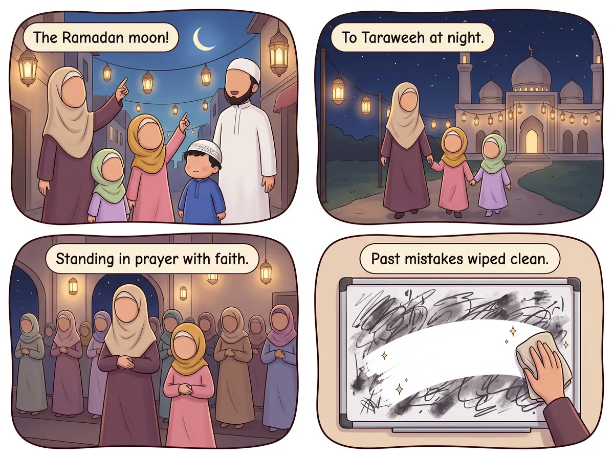

‹ সব হাদিস
রমজানের রাতের নামাজ

عَنْ أَبِي هُرَيْرَةَ، أَنَّ رَسُولَ اللَّهِ ﷺ قَالَ: مَنْ قَامَ رَمَضَانَ إِيمَانًا وَاحْتِسَابًا غُفِرَ لَهُ مَا تَقَدَّمَ مِنْ ذَنْبِهِ
আমার সাথে বলো: মান ক্বামা রামাদ্বানা ঈমানান ওয়াহতিসাবান, গুফিরা লাহু মা তাক্বাদ্দামা মিন যানবিহ।
“যে ঈমানের সাথে ও সওয়াবের আশায় রমজানে রাতে নামাজে দাঁড়ায়, তার আগের গুনাহ মাফ করে দেওয়া হয়।”
বর্ণনায়: আবু হুরায়রা (রাঃ) · বুখারী ও মুসলিম
এর মানে আমার জন্য কী?
রমজানে রাতে একটি বিশেষ নামাজ হয়, যার নাম তারাবীহ। তুমি যদি আল্লাহর প্রতি বিশ্বাস রেখে ও তাঁর পুরস্কারের আশায় এই নামাজ পড়ো, আল্লাহ তোমার আগের ভুলগুলো মুছে দেন—পরিষ্কার হোয়াইটবোর্ডের মতো!🔤 ৮টি শব্দ
শুনতে কার্ডে চাপ দাও
🔊
مَنْ
যে
🔊
قَامَ
নামাজে দাঁড়ায়
🔊
رَمَضَانَ
রমজানে
🔊
إِيمَانًا
ঈমানের সাথে
🔊
وَاحْتِسَابًا
সওয়াবের আশায়
🔊
غُفِرَ لَهُ
তাকে মাফ করা হয়
🔊
مَا تَقَدَّمَ
যা আগে হয়েছে
🔊
مِنْ ذَنْبِهِ
তার গুনাহ
⭐ চলো করে দেখি!
আগামী রমজানে পরিবারের সাথে তারাবীহ পড়ো—কয়েক রাকাত হলেও!